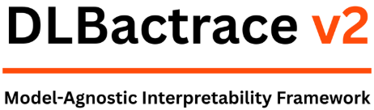

¶



Overview¶
DL-Backtrace is a powerful explainable AI framework developed by Lexsi Labs for enhancing the interpretability of deep learning models. It provides comprehensive layer-wise relevance propagation and model tracing capabilities across various architectures and tasks, with robust execution engines optimized for both CPU and GPU environments.
Whether you're working with vision models, NLP transformers, MoE's or custom architectures, DL-Backtrace provides insights into feature importance, information flow, and bias, enabling better model interpretation and validation without external dependencies.
Why DL-Backtrace?¶
🔍 Deep Model Interpretability¶
Gain comprehensive insights into your AI models using advanced relevance propagation algorithms. Understand which features and layers contribute most to your model's predictions.
⚡ High Performance¶
Optimized execution engine with CUDA acceleration and deterministic tracing. Choose between CPU and GPU execution based on your needs.
🏗️ Architecture Agnostic¶
Support for CNN, RNN, Transformer, and custom architectures. Works seamlessly with popular models like ResNet, BERT, LLaMA, and more.
🎯 Multi-Task Support¶
Binary/multi-class classification, segmentation, and text generation - all supported out of the box.
🛡️ Production Ready¶
Deterministic execution environment with comprehensive error handling. Battle-tested on real-world models and datasets.
Quick Example¶
import torch
import torch.nn as nn
from dl_backtrace.pytorch_backtrace import DLBacktrace
# Define your model
class MyModel(nn.Module):
def __init__(self):
super().__init__()
self.conv1 = nn.Conv2d(3, 64, 3, padding=1)
self.relu = nn.ReLU()
self.pool = nn.AdaptiveAvgPool2d(1)
self.fc = nn.Linear(64, 10)
def forward(self, x):
x = self.relu(self.conv1(x))
x = self.pool(x).flatten(1)
return self.fc(x)
# Initialize model and DL-Backtrace
model = MyModel()
x = torch.randn(1, 3, 224, 224)
dlb = DLBacktrace(
model=model,
input_for_graph=(x,),
device="cuda"
)
# Get layer-wise outputs
node_io = dlb.predict(x)
# Calculate relevance propagation
relevance = dlb.evaluation(
mode="default",
multiplier=100.0,
task="multi-class classification"
)
# Visualize the graph
dlb.visualize()
Supported Models¶
DL-Backtrace has been extensively tested with:
Vision Models¶
- ResNet, VGG, DenseNet, EfficientNet, MobileNet
- Vision Transformer (ViT)
- Custom CNNs
NLP Models¶
- BERT, ALBERT, RoBERTa, DistilBERT
- ELECTRA, XLNet
- LLaMA-3.2 (1B, 3B), Qwen3
- MoE's like JetMoE, OLMoE, GPT-oss, Qwen MoE
Tasks¶
- Binary & Multi-class Classification
- Object Detection
- Semantic Segmentation
- Text Generation
- Sentiment Analysis
Key Capabilities¶
Layer-wise Relevance Propagation¶
Track how relevance flows backward through your model, from output predictions to input features. Supports multiple evaluation modes including default and contrastive explanations.
Graph Tracing & Visualization¶
Automatically trace your model's computational graph and visualize the architecture with relevance scores. Supports both full graph and top-k relevance visualization.
Deterministic Execution¶
Ensures reproducible results across runs with automatic environment configuration.
Community & Support¶
- Documentation: You're reading it! 📚
- Examples: Check out our example notebooks
- Issues: GitHub Issues
- Email: support@lexsi.ai
Next Steps¶
🚀 Quick Start¶
Get up and running in minutes with our quick start guide.
📚 User Guide¶
Learn about features, APIs, and best practices.
💻 Examples¶
Interactive notebooks and real-world use cases.
🤝 Developer Guide¶
Contributing and extending DL-Backtrace.
DL-Backtrace - Making AI Transparent and Explainable 🚀
Built with ❤️ by Lexsi Labs